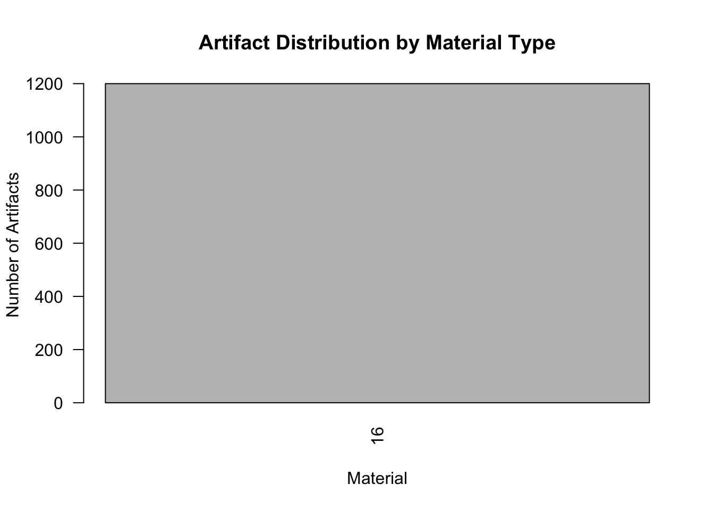
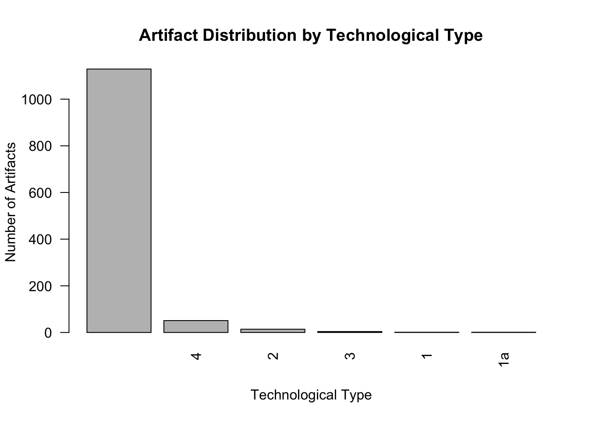
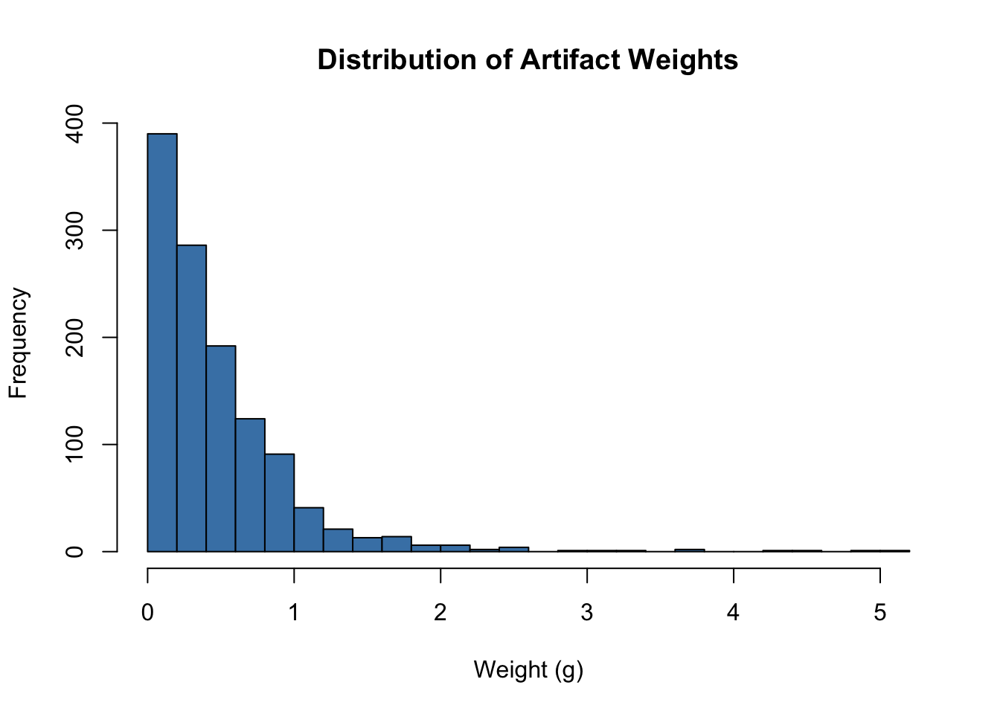
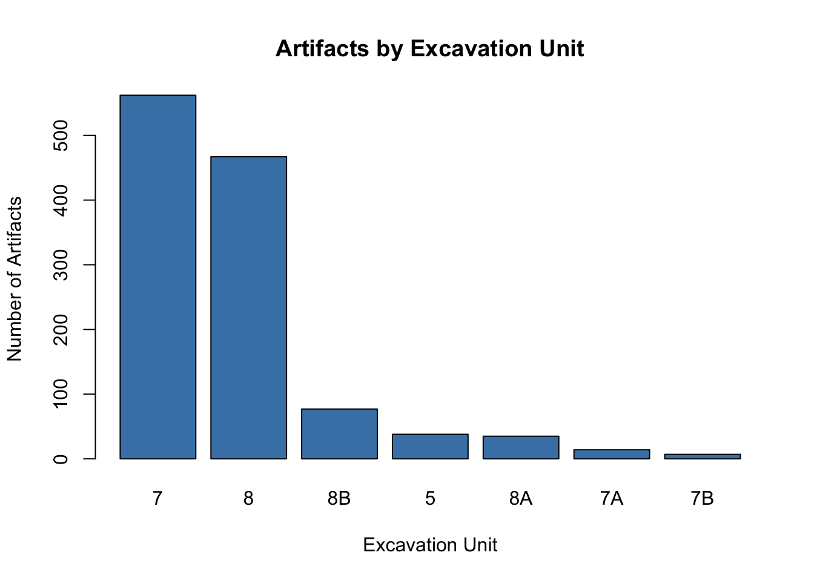

Last updated: 2026-01-27
Checks: 5 2
Knit directory: Archaeology/
This reproducible R Markdown analysis was created with workflowr (version 1.7.1). The Checks tab describes the reproducibility checks that were applied when the results were created. The Past versions tab lists the development history.
The R Markdown is untracked by Git. To know which version of the R
Markdown file created these results, you’ll want to first commit it to
the Git repo. If you’re still working on the analysis, you can ignore
this warning. When you’re finished, you can run
wflow_publish to commit the R Markdown file and build the
HTML.
Great job! The global environment was empty. Objects defined in the global environment can affect the analysis in your R Markdown file in unknown ways. For reproduciblity it’s best to always run the code in an empty environment.
The command set.seed(20260127) was run prior to running
the code in the R Markdown file. Setting a seed ensures that any results
that rely on randomness, e.g. subsampling or permutations, are
reproducible.
Great job! Recording the operating system, R version, and package versions is critical for reproducibility.
Nice! There were no cached chunks for this analysis, so you can be confident that you successfully produced the results during this run.
Using absolute paths to the files within your workflowr project makes it difficult for you and others to run your code on a different machine. Change the absolute path(s) below to the suggested relative path(s) to make your code more reproducible.
| absolute | relative |
|---|---|
| /Users/patrickphang/Documents/GitHub/Archaeology/lithic_analysis.csv | lithic_analysis.csv |
Great! You are using Git for version control. Tracking code development and connecting the code version to the results is critical for reproducibility.
The results in this page were generated with repository version a355e63. See the Past versions tab to see a history of the changes made to the R Markdown and HTML files.
Note that you need to be careful to ensure that all relevant files for
the analysis have been committed to Git prior to generating the results
(you can use wflow_publish or
wflow_git_commit). workflowr only checks the R Markdown
file, but you know if there are other scripts or data files that it
depends on. Below is the status of the Git repository when the results
were generated:
Ignored files:
Ignored: analysis/data/
Ignored: renv/library/
Ignored: renv/staging/
Untracked files:
Untracked: analysis/lithic_overview.Rmd
Untracked: lithic_analysis.csv
Unstaged changes:
Modified: analysis/_site.yml
Deleted: lithic_analysis(analysis).csv
Note that any generated files, e.g. HTML, png, CSS, etc., are not included in this status report because it is ok for generated content to have uncommitted changes.
There are no past versions. Publish this analysis with
wflow_publish() to start tracking its development.
This is our first analysis! We’ll explore the lithic (stone tool) assemblage from the Muyumoqo excavation. We’ll look at:
First, let’s load the lithic analysis data:
# Read the CSV file
# The file has some encoding issues, so we'll handle that
lithic_data <- read.csv("/Users/patrickphang/Documents/GitHub/Archaeology/lithic_analysis.csv",
fileEncoding = "latin1")
# See column names
colnames(lithic_data) [1] "Unidad" "Cuad" "Nivel"
[4] "Rasgo" "Excavador" "Fecha"
[7] "Context" "N.frag." "Tamaño.frag."
[10] "Length" "Width" "Thickness"
[13] "Material" "Technological.Type" "Debris"
[16] "Platform.Type" "Termination" "X..Cortex"
[19] "Portion" "Modification" "Weight"
[22] "Notes" "Foto" "X"
[25] "X.1" "X.2" "X.3"
[28] "X.4" "X.5" "X.6"
[31] "X.7" "X.8" "X.9"
[34] "X.10" Let’s get basic information about what we’re working with:
# How many artifacts do we have?
nrow(lithic_data)[1] 1200# How many columns (measurements and attributes)?
ncol(lithic_data)[1] 34# What columns do we have?
colnames(lithic_data) [1] "Unidad" "Cuad" "Nivel"
[4] "Rasgo" "Excavador" "Fecha"
[7] "Context" "N.frag." "Tamaño.frag."
[10] "Length" "Width" "Thickness"
[13] "Material" "Technological.Type" "Debris"
[16] "Platform.Type" "Termination" "X..Cortex"
[19] "Portion" "Modification" "Weight"
[22] "Notes" "Foto" "X"
[25] "X.1" "X.2" "X.3"
[28] "X.4" "X.5" "X.6"
[31] "X.7" "X.8" "X.9"
[34] "X.10" Let’s see the overall characteristics:
# Get summary statistics
summary(lithic_data) Unidad Cuad Nivel Rasgo
Length:1200 Length:1200 Length:1200 Length:1200
Class :character Class :character Class :character Class :character
Mode :character Mode :character Mode :character Mode :character
Excavador Fecha Context N.frag.
Length:1200 Length:1200 Mode:logical Min. :1.000
Class :character Class :character NA's:1200 1st Qu.:1.000
Mode :character Mode :character Median :1.000
Mean :1.012
3rd Qu.:1.000
Max. :6.000
Tamaño.frag. Length Width Thickness
Length:1200 Min. :14.10 Min. : 9.57 Min. :2.700
Class :character 1st Qu.:17.01 1st Qu.:11.21 1st Qu.:4.098
Mode :character Median :19.52 Median :12.87 Median :4.810
Mean :19.84 Mean :12.82 Mean :4.683
3rd Qu.:21.78 3rd Qu.:14.39 3rd Qu.:5.435
Max. :29.66 Max. :17.38 Max. :7.930
NA's :1170 NA's :1170 NA's :1170
Material Technological.Type Debris Platform.Type
Min. :16 Length:1200 Length:1200 Length:1200
1st Qu.:16 Class :character Class :character Class :character
Median :16 Mode :character Mode :character Mode :character
Mean :16
3rd Qu.:16
Max. :16
Termination X..Cortex Portion Modification
Length:1200 Min. :0.000 Length:1200 Length:1200
Class :character 1st Qu.:0.000 Class :character Class :character
Mode :character Median :0.000 Mode :character Mode :character
Mean :0.035
3rd Qu.:0.000
Max. :6.000
Weight Notes Foto X
Min. :0.0100 Length:1200 Length:1200 Length:1200
1st Qu.:0.1500 Class :character Class :character Class :character
Median :0.3400 Mode :character Mode :character Mode :character
Mean :0.4828
3rd Qu.:0.6400
Max. :5.1300
NA's :1
X.1 X.2 X.3 X.4 X.5
Mode:logical Length:1200 Mode:logical Mode:logical Mode:logical
NA's:1200 Class :character NA's:1200 NA's:1200 NA's:1200
Mode :character
X.6 X.7 X.8 X.9 X.10
Mode:logical Mode:logical Mode:logical Mode:logical Mode:logical
NA's:1200 NA's:1200 NA's:1200 NA's:1200 NA's:1200
# How many artifacts by excavation unit?
table(lithic_data$Unidad)
5 7 7A 7B 8 8A 8B
38 562 14 7 467 35 77 What raw materials were used to make tools?
# Count artifacts by material
material_table <- table(lithic_data$Material)
material_df <- data.frame(
Material = names(material_table),
Count = as.numeric(material_table)
)
material_df <- material_df[order(-material_df$Count), ]
print(material_df) Material Count
1 16 1200# Visualize material distribution
barplot(material_df$Count,
names.arg = material_df$Material,
main = "Artifact Distribution by Material Type",
xlab = "Material",
ylab = "Number of Artifacts",
las = 2)
What kinds of tools were made?
# Count artifacts by technological type
tech_table <- table(lithic_data$Technological.Type)
tech_df <- data.frame(
Type = names(tech_table),
Count = as.numeric(tech_table)
)
tech_df <- tech_df[order(-tech_df$Count), ]
print(tech_df) Type Count
1 1129
6 4 51
4 2 14
5 3 4
2 1 1
3 1a 1# Visualize
barplot(tech_df$Count,
names.arg = tech_df$Type,
main = "Artifact Distribution by Technological Type",
xlab = "Technological Type",
ylab = "Number of Artifacts",
las = 2)
How big are our artifacts?
# Get summary of size measurements
cat("Summary of measurements:\n")Summary of measurements:cat("Mean Length:", mean(lithic_data$Length, na.rm = TRUE), "mm\n")Mean Length: 19.84167 mmcat("Mean Width:", mean(lithic_data$Width, na.rm = TRUE), "mm\n")Mean Width: 12.81533 mmcat("Mean Thickness:", mean(lithic_data$Thickness, na.rm = TRUE), "mm\n")Mean Thickness: 4.683333 mmcat("Mean Weight:", mean(lithic_data$Weight, na.rm = TRUE), "g\n")Mean Weight: 0.482794 g# Distribution of weights
hist(lithic_data$Weight,
main = "Distribution of Artifact Weights",
xlab = "Weight (g)",
ylab = "Frequency",
breaks = 30,
col = "steelblue")
Are there differences between different areas of the site?
# Count by unit
unit_table <- table(lithic_data$Unidad)
unit_df <- data.frame(
Unit = names(unit_table),
Count = as.numeric(unit_table)
)
unit_df <- unit_df[order(-unit_df$Count), ]
print(unit_df) Unit Count
2 7 562
5 8 467
7 8B 77
1 5 38
6 8A 35
3 7A 14
4 7B 7# Visualize
barplot(unit_df$Count,
names.arg = unit_df$Unit,
main = "Artifacts by Excavation Unit",
xlab = "Excavation Unit",
ylab = "Number of Artifacts",
col = "steelblue")
Based on this initial exploration:
The assemblage shows a diverse set of tools made from various materials, with clear patterns in tool types and sizes. Future analyses can dive deeper into: - Temporal patterns (if levels represent different time periods) - Spatial patterns (differences between excavation units) - Tool use and modification patterns - Technological sequences in tool production
sessionInfo()R version 4.3.1 (2023-06-16)
Platform: aarch64-apple-darwin20 (64-bit)
Running under: macOS Monterey 12.3
Matrix products: default
BLAS: /Library/Frameworks/R.framework/Versions/4.3-arm64/Resources/lib/libRblas.0.dylib
LAPACK: /Library/Frameworks/R.framework/Versions/4.3-arm64/Resources/lib/libRlapack.dylib; LAPACK version 3.11.0
locale:
[1] en_US.UTF-8/en_US.UTF-8/en_US.UTF-8/C/en_US.UTF-8/en_US.UTF-8
time zone: America/Detroit
tzcode source: internal
attached base packages:
[1] stats graphics grDevices datasets utils methods base
loaded via a namespace (and not attached):
[1] vctrs_0.6.5 cli_3.6.5 knitr_1.50 rlang_1.1.6
[5] xfun_0.52 stringi_1.8.7 renv_1.1.4 promises_1.3.3
[9] jsonlite_2.0.0 workflowr_1.7.1 glue_1.8.0 rprojroot_2.0.4
[13] git2r_0.36.2 htmltools_0.5.8.1 httpuv_1.6.16 sass_0.4.10
[17] rmarkdown_2.29 evaluate_1.0.4 jquerylib_0.1.4 fastmap_1.2.0
[21] yaml_2.3.10 lifecycle_1.0.4 stringr_1.5.1 compiler_4.3.1
[25] fs_1.6.6 Rcpp_1.1.0 later_1.4.2 digest_0.6.37
[29] R6_2.6.1 magrittr_2.0.3 bslib_0.9.0 tools_4.3.1
[33] cachem_1.1.0